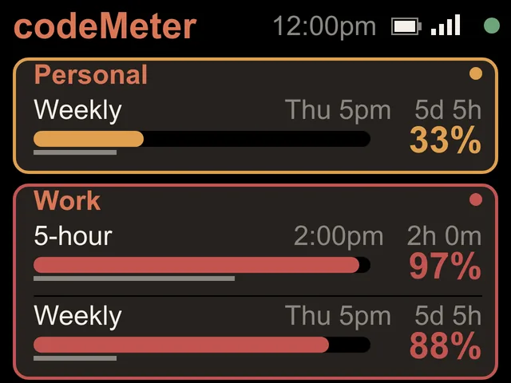
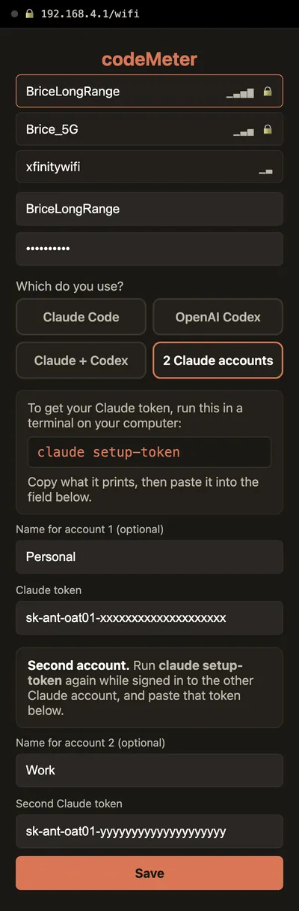
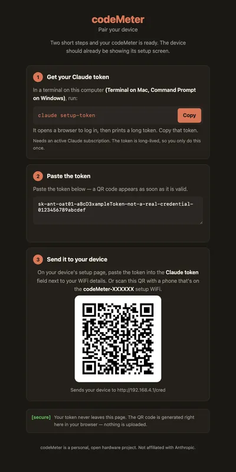

2 Claude accounts
Two Claude accounts, one screen.
Personal and Work, side by side. Each with a name you choose and the limits its own plan has.

On the screen
One card per account.
- NamesUp to 10 characters each, like Personal and Work. Leave them blank and they read Claude 1 and Claude 2.
- A line for each limit5-hour, Weekly or Monthly, with the reset time, a countdown, a bar with a time marker and the percent used.
- Only what the plan hasLines a plan does not have are left off, so the rest are bigger.
- Ahead of paceA card with any limit ahead of pace gets an amber outline and a dot.
Screens
Mixed plans are fine.



Set up
Two tokens, one setup page.
- 1Two tokens
Run
claude setup-tokenonce while signed in to each account. - 2Pick 2 Claude accounts
On the setup page, pick 2 Claude accounts, paste both tokens and add names if you like.
- 3Already set up?
Hold B about 7 seconds. The setup page opens again and keeps your Wi-Fi and names.
The setup page
What you will see on your phone.


In use
Glance, don't check.
It sits beside the keyboard, so your limits are a look away while you work.


8 stand colours. Pick one to start your build.
FAQ
Questions.
Can codeMeter show two Claude accounts?
Yes. Choose 2 Claude accounts on the setup page and paste a token for each. Two is the most it shows.
Does a second account use more of my limit?
Each account is checked with its own tiny request, the same as one account on its own. It is a negligible slice of each account's allowance.
One account says token rejected. Is the other still working?
Yes. Only that account's card stops updating. Hold B about 7 seconds and paste fresh tokens; on a two-account device it asks for both again, so have both ready.
Did I have to pay for this?
No. Two accounts arrived as a free update in firmware 0.5.0 on October 31, 2026, for every codeMeter.
myDeskMeter